Як порадувати дітлахів, запрошених на домашнє святкування дня народження? Звичайно ж, в якості фінального сюрпризу винести смачний святковий торт, який прикрашають фігурки M&M’s з мастики! Такий сюрприз діти гідно оцінять, адже це набагато веселіше і цікавіше, ніж кремовий амурчик або квітка, що прикрашають деякі кондитерські вироби.
Інгредієнти і інструменти, які знадобляться
Для того щоб виготовити прикрасу для торта у вигляді фігурки ММдемс з мастики, необхідно мати набір наступних інгредієнтів і інструментів.
Для основи фігурки:
- Повітряний рис або повітряна пшениця. Кількість інгредієнта залежить від розміру мастичної фігури.
- Маршмеллоу. Підійде як класичний – білий маршмеллоу, так і різнобарвний.
Для ліплення фігурки:
- Мастика. Приготувати її можна самостійно – у нас ви знайдете безліч докладних покрокових рецептів мастики і майстер-класів кондитерів. Але можна скористатися і готовою масою. Для прикрас знадобиться червона, жовта, чорна, біла і рожева мастика.
Корисно знати!
Колір мастики залежить від обраного персонажа. Для класичного варіанту виготовляються червоний і жовтий емемдемс, однак можна додати фігурки помаранчевого, коричневого, зеленого і блакитного кольорів.
- Зубочистка. Можна використовувати будь-який інший інструмент, яким зручно виконувати дрібні операції по продавлюванню і вирізанню деталей фігурки, наприклад спицю або заточений сірник.
- Ніж. Бажано з тонким і гострим кінчиком, за допомогою якого зручно нарізати мастику і прорізати різні деталі виробу.
- Цукерки емендемс. Підійдуть будь-які цукерки, їх кількість залежить від розмірів торта і вироблених фігурок, але не менше 130 гр.
Як робиться основа емендема
Тема ММs – прекрасна ідея для декорування дитячого святкового тортика. Якщо очікується багато гостей, можна замовити двох’ярусний десерт в будь-якій кондитерській або спекти його самостійно за своїм рецептом.
Почніть ліпити забавні фігурки з виготовлення основи. Потрібно:
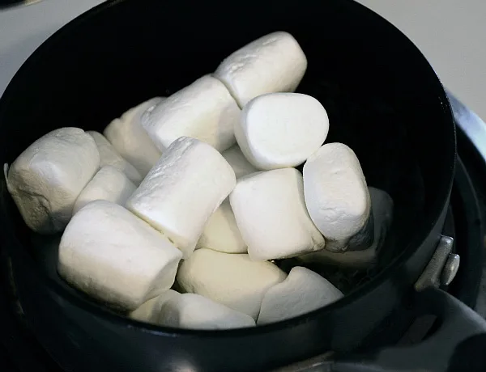
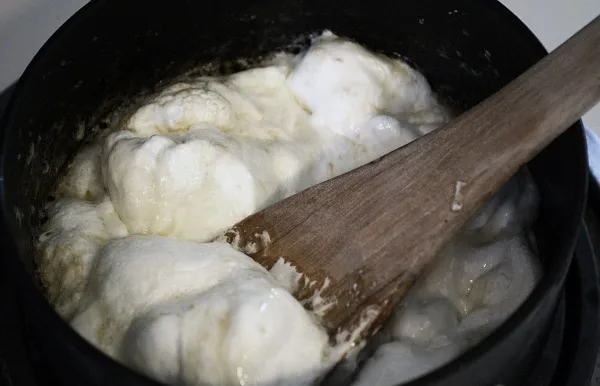
- Розтопити маршмеллоу. Для цього використовуйте мікрохвильову піч або водяну баню. Добре розігріті цукрові зефірки стають м’якими і тягучими.
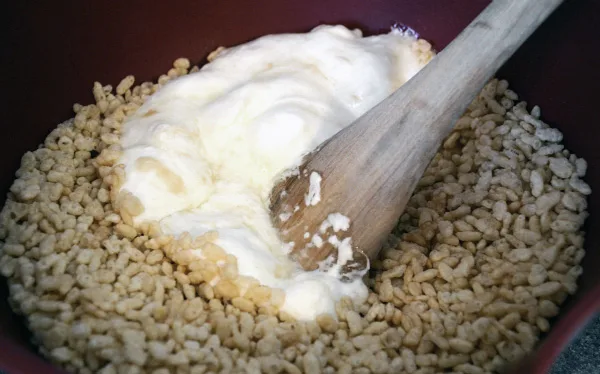
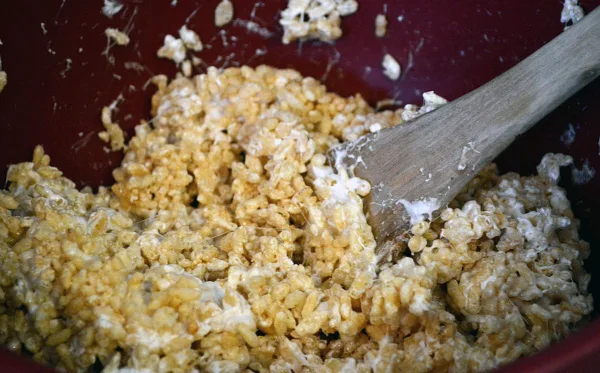
- У розтоплену масу додати повітряний рис або пшеницю. Масу добре перемішати, вона повинна вийти досить густою і в’язкою.
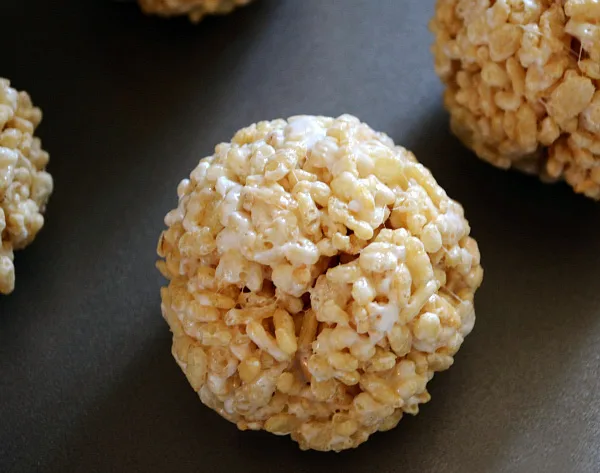
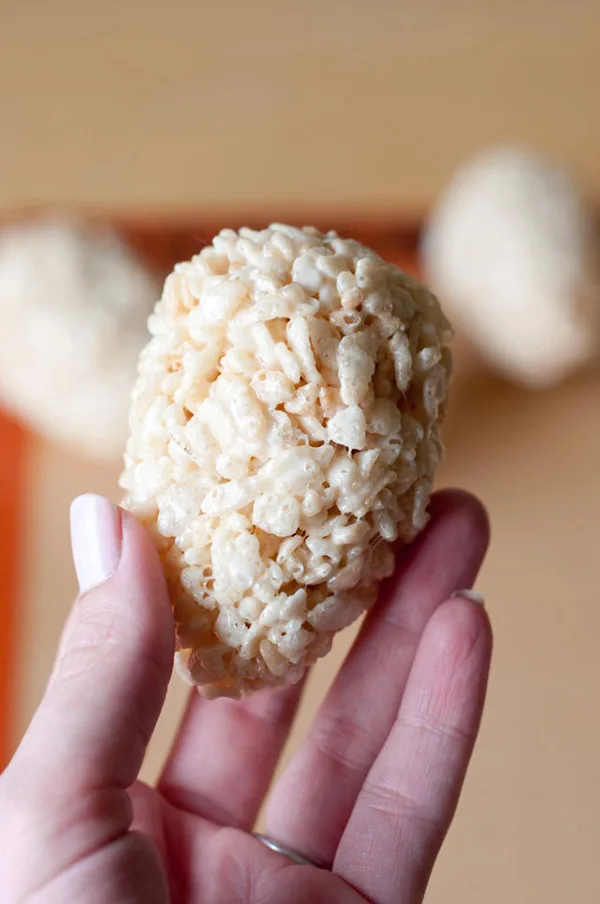
- Зробити заготовки фігурок. Червоний емендемс має круглу форму, жовтий – овальну. Решта фігурок має овальну форму, крім оранжевого персонажа.
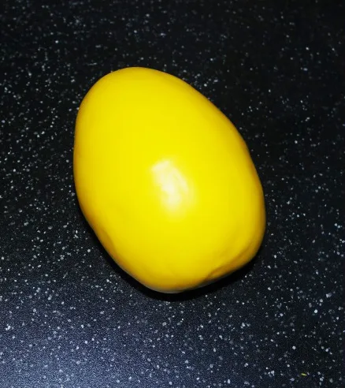
- Прибрати нерівності. Деякі підписчики запитують, чи потрібно змащувати заготовки кремом, щоб прибрати нерівності. Ні, для гладкості досить покрити їх в кілька шарів мастикою відповідного кольору.
Після того як основи майбутніх прикрас будуть готові, можна приступити до ліплення “обличчя” і деталей фігурок.
Як ліпиться «обличчя» емендема та інші деталі
Обличчя і деталі емендемсов виліпити досить просто, з цим завданням може впоратися дитина під керівництвом дорослого.
Технологія ліплення “обличчя”
Всі обличчя фігурок робляться однаково і розрізняються положенням куточків рота, брів, очей.
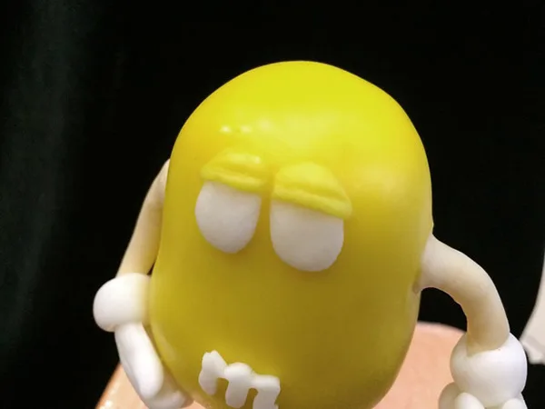
- Спочатку слід підготувати необхідну мастику. Знадобиться чорна і біла мастика, з яких будуть зліплюватися очі і рот, а також мастика кольору обраних фігурок.
- Для того щоб виліпити очі, необхідно розкачати невеликі кульки білої мастики, трохи сплюснути їх і наліпити на заготовку.
- Щоб виліпити повіки, потрібно взяти невеликий шматочок мастики відповідного кольору, розкачати його тонким шаром. Вирізати коло для очей фігурки відповідного розміру і розрізати його навпіл. В результаті виходять два вічка, які слід наліпити на очі заготовки. Віко має прикривати очі до середини. Тонко розкатаний джгутик з мастики потрібно приліпити на зріз віка – такий прийом додасть оку реалістичності.
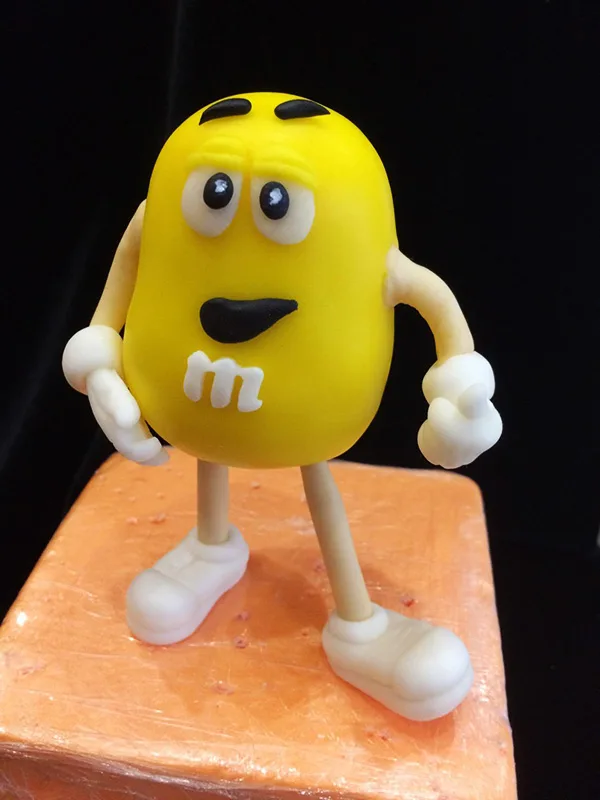
- Далі зробити зіниці. З мастики чорного кольору скачати маленькі кульки і наліпити їх на білі кружки очей.
- Брови зробити з маленьких джгутиків чорної мастики.
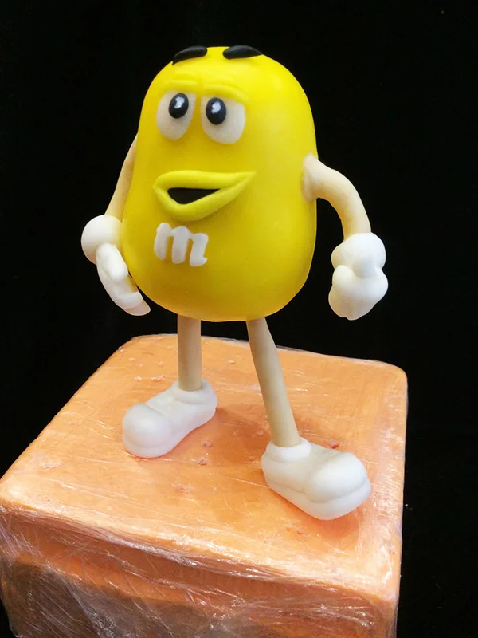
- Рот прорізати зубочисткою і лінію зрізу обрамити тонким джгутиком. Внутрішню частину заповнити мастикою чорного кольору.
Важливо!
Скріплюйте мастичні деталі, змащуючи їх водою або яєчним білком за допомогою пензлика або пальця.
Технологія ліплення деталей
Деталі фігурок – це черевички і рукавички. Для того щоб зліпити черевички, потрібно:
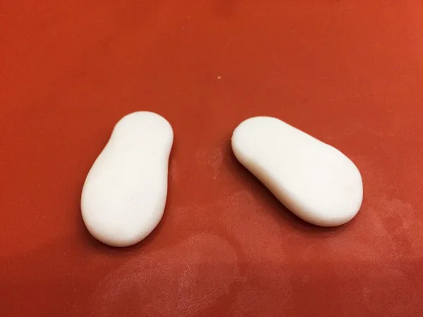
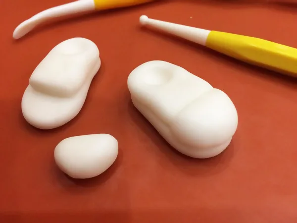
- Взяти мастику білого кольору, зліпити дві однакові деталі у вигляді трохи приплюснутих овалів, які посередині продавлюються зубочисткою.
- Обрамити підошву черевиків тонким джгутиком.
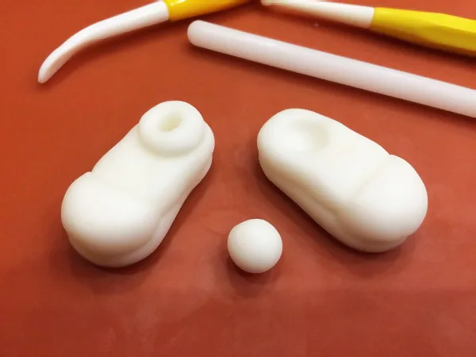
- На черевик кріпиться невелика кругла увігнута деталь – місце з’єднання з ніжкою.
- Ніжка емендемса – невеликий джгут, скачаний з рожевої мастики.
Для того щоб зліпити рукавички, потрібно:
- Зробити 2 невеликі каплевидні заготовки з білої мастики.
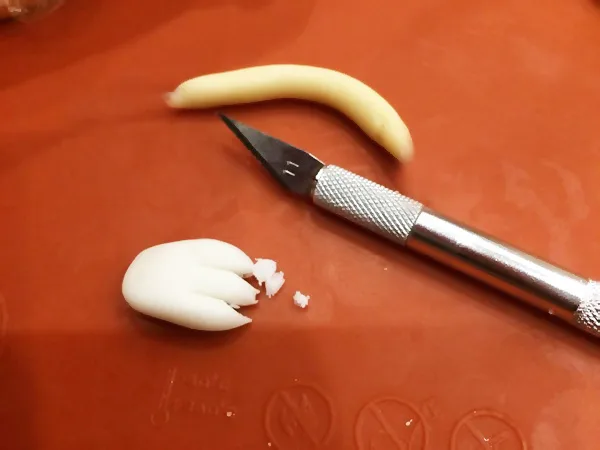
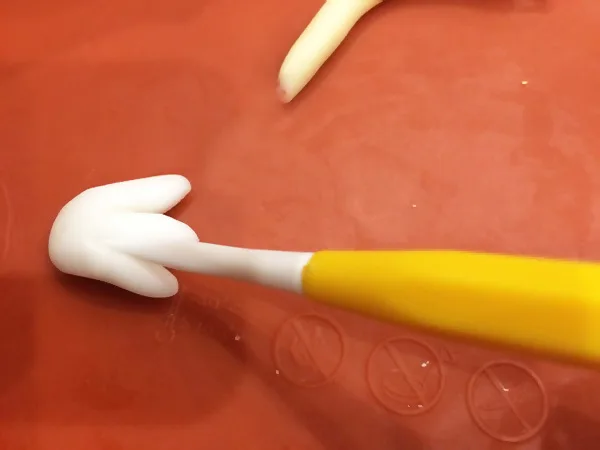
- Прорізати ножем 3 пальця і згладити їх кінці.
- Додати великий палець.
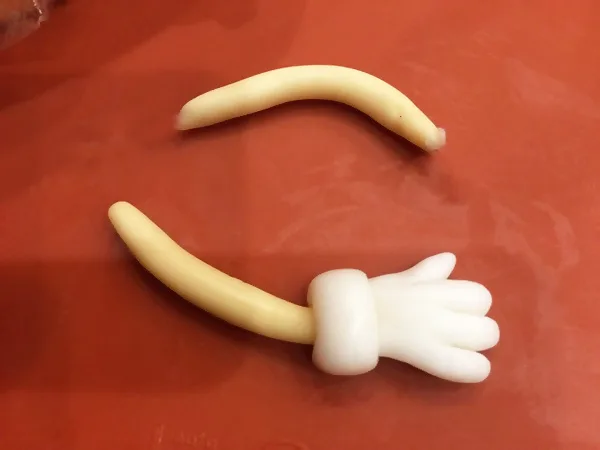
- Рукавичка кріпиться до руки за допомогою невеликої круглої увігнутої деталі, як і в випадку з черевиком.
- Рука емендемса – джгутик з рожевої мастики.
Важливо!
На животик фігурок необхідно нанести букву m з білої мастики. Виріжте її вручну або за допомогою плунжера.
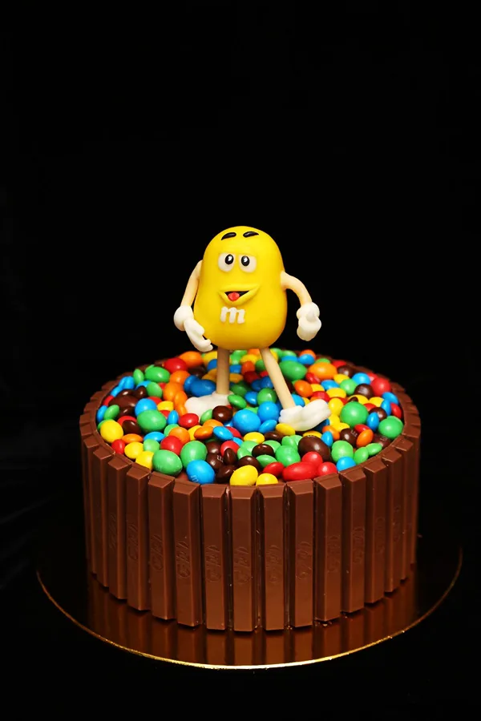
Після того як всі деталі будуть виготовлені, можна збирати фігурки, прикріпивши ніжки і ручки до тіла. Коли ви розмістите на торт персонажів в потрібних позах, засипте поверхню торта різнокольоровими цукерками M&M’s. Подивіться докладне відео про ліплення фігурок.
Варто пам’ятати!
Якщо у запрошених гостей є алергія на арахіс, як прикрасу краще використовувати цукерки емендемс з шоколадною начинкою.
Обов’язково спробуйте прикрасити торт так, як описано в запису. І не забувайте ділитися з нами результатами!